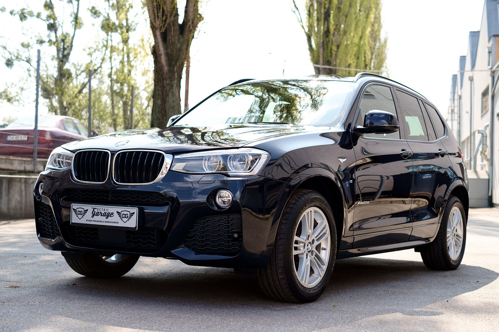

No. 01 · Yıkamanın iki yolu
Sen gel, ya da biz gelelim.
Tesise uğrayacaksan kuyruğu önceden gör. Vaktin yoksa adresini seç, ekip senin bölgene geldiği gün boş saati al. Sürekli yıkatana aylık abonelik.
Kuyruğa bakAdrese çağır
Kuyrukta kaç araç var?
İki hat çalışıyor. Araç tipini ve yıkamayı seç, tahmini toplam süreni gör, sıraya yaz.

“Sırada beklemek değil, ne kadar bekleyeceğini bilmek önemli.”
Adresini seç, boş saati al.
Ekip her gün farklı bölgelerde. Haritadan bölgeni seç; sadece ekibin o bölgede olduğu günler ve boş saat aralıkları açılır.
Araç tipine göre, iki ayrı liste.
Tesis ve adrese gelen yıkamanın fiyatı farklıdır. Örnek liste; işletme kendi fiyatını girer.
Tesiste
Adrese gelen
Aylık sınırsız yıkama.
Plan, plaka, demo ödeme, abonelik kartı. İptal tek dokunuş.
